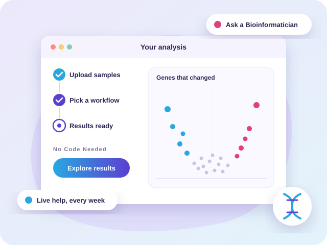

Founding Marketing & Product Hire
Building an Audience From Scratch
Basepair makes software that lets researchers study genetic data without writing code. It is led by its scientist founder. I joined as the first marketing hire, when no one yet owned the brand, the stories, or the outreach. I built all three, starting by listening.

What I Did
Wrote the Plan
I learned the product and the business inside out, then wrote the strategic marketing plan everything else was built on. Customers of competitors felt unsupported, with no one to answer their questions, so I positioned Basepair as a community for scientific discovery.
Launched “Ask a Bioinformatician”
A free weekly live session online where anyone, customer or not, could bring a question to one of Basepair's experts. Competitors' customers came for an answer, found people who cared, and many switched. It became one of the main ways new people found the company.
Shared Customer Stories
I collaborated with customers to discover what they were working on and how using Basepair impacted their work. The stories became Basepair's most trusted marketing.
Refreshed the Brand
A warmer, clearer look across the website, print and live events, built around messaging that resonated.
Revitalized the Website
Clearer pages, plainer words and an obvious next step. Visitors who left right away fell from half to just one in ten.
Redesigned Onboarding
I shaped the first experience with researchers, so new sign-ups became lasting customers.
Results
Revenue
More new customers stayed on after their first experience
Of website visitors stayed to explore, up from half